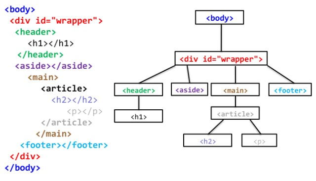
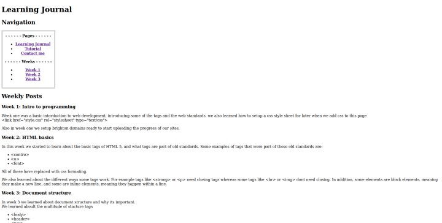
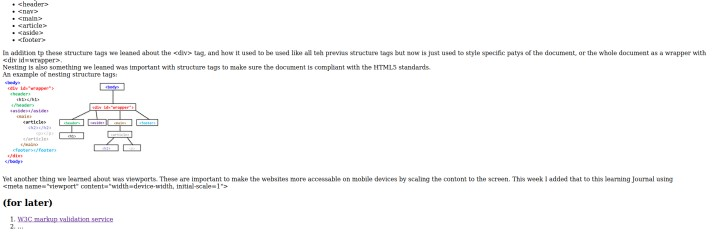

Week one was a basic introduction to web development, introducing some of the tags and the web standards.
we also learned how to setup a css style sheet for later when we add css to this page.
<link href="style.css" rel="stylesheet" type="text/css">
Also in week one we setup Brighton domains ready to start uploading the progress of our sites.
In this week we started to learn about the basic tags of HTML 5, and what tags are part of old standards. Some examples of tags that were part of those old standards are:
<centre>
<u>
<font>
All of these have replaced with css formatting.
We also learned about the different ways some tags work. For example tags like <strong>; or <p> need closing tags whereas some tags like <br> or <img> don't need closing. In addition, some elements are block elements, meaning they make a new line, and some are inline elements, meaning they happen within a line.
In week 3 we learned about document structure and why its important.
We also learned about the multitude of stucture tags:
<body>
<header>
<nav>
<main>
<article>
<aside>
<footer>
In addition to these structure tags we leaned about the <div> tag, and how it used to be used like all the previous structure tags but now is just used to style specific parts of the document, or the whole document as a wrapper with <div id=wrapper>.
Nesting is also something we leaned was important with structure tags to make sure the document is compliant with the HTML5 standards.
An example of nesting structure tags:

Yet another thing we learned about was viewports. These are important to make the websites more accessable on mobile devices by scaling the contont to the screen. This week I added that to this learning Journal using
<meta name="viewport" content="width=device-width, initial-scale=1">
Now that 3 weeks of the module have passed, I have taken screenshots of the current state of the site as it stands to keep a record of the progress of the site. Pictured below is the site as of 26 Oct 2023


A problem as you can see with the page is that is spans across way to far, this will be one of the first things I fix during week 4.
Week 4 was the introduction to CSS. We were taught about the layout of CSS, and why its important. We were also given a stylesheet 'normanlize.css'. This stylesheet is important because browsers have their own default styles which may cause a site to not look as expected on some browsers.
In addition to what we were taught in lectures I decided to try implement basic responsive design, using a max width on the page. Adding a max width fixes the problem of the site being unfriendly on small screens like on mobile phones as seen in the screenshot below
In that screenshot, you can also see the background colour which was inspired by the colour of dyslexia friendly books/paper, as well as the navigation table.
Week 5 expanded on CSS, showing us the difference between margin, border, and padding with html elements. The box module of CSS was also explained where every element has a content width, padding, border, and margin. The content inside these boxes are styled with inline elements.
In addition to the box structure, we also were taught about all the different units that can be used for sizing objects. However, for now i will be sticking to pixel measurements because of problems I have encountered while trying to convert items to em measurements.
Starting week 6 was responsive web design, starting with why its important to have a responsive web design. Since people are using phones as their primary way of accessign the web, its imperitive that sites to be designed to fit mobile and any other devices. We then went on to learn about the 3 ways if implementing responsive web design:
Fluid layout: uisng units flexible units(%, em, rem) and using CSS layout moduals like grids, and columns
CSS media queries: detecting the veiwport size and style element with diferent capabilities
responsive media: flexible images and media containers
After being taught about these RWD techniques I implemented a viewport to scale down the page on mobile, media queries to make the site work better on smaller screens like resizing the images and padding on some element, and lastly i set up a grid layout to improve how the site looked on all devices. Overall I ended the week redesigning the page which will be shown in the screenshots in the next article.
Week7 was a continuation of responsive web development done in week 6. This week was focused around making media like images responsive. The first thing told in the lecture awas making sure images take up no more data then they need, i.e. compressing and resizing them. I then implemented this by turing all my images into .jpg format and resizing them to 720p which is the largest they will be shown.
The next thing we were shown was clipping images, this cuts of parts of an image to make it fit into the area its given rather than shinking it to the area.
lastly we were shown how to implement videos in a responsive way, however I will not be adding images to my site so i will not need this.
Doing my own reasearch I found how to round of the corners of various parts of the site using the CSS property border-radius:15px; which I found out using w3schools, this along with optimising images is all I did during week7.
This week was about different posititoning systems. The ones covered in the lecture were float and clear, CSS position, multi columns, and flexbox.
Float and clear are tags to make text and images next to eachother rather than being stacked ontop of eachother. float tells the site to start a float and clear just stops it.
position is a css attribute that positions items in specific ways. The ways elements can be positioned are:
absolute - given an position based on the element closest to it
fixed - given a position to be based on its container
relative - offset from its normal position
static - normal positioning
sticky - sticks to a position on the viewport once it reaches it
Multi columns is just as it sounds. Columns have rules set by css. These are count, width, gap, rule, span, and fill.
Flexbox is the last one we were told about.They layout elements on columns and rows, and automaticly space them out. The css attributes for flexboxs are direction, wrap, flow, justify-content, and align-items.
outside of the lecture and labs I re-done the responsive CSS to make it more resposive to all screen ratios.
In week 9 we were tought how to setup forms for the 'contact me' page. Forms require javascript and php to properly function, so for now it is purly decorative.
the elements used for html forms are the following:
form action="/processing-page" method="\[method to submit]"
- open a form, needs a closing tag
label for="\[id of the input object]">
input type="\[input type]" id="id" - adds a field for inputs
input types:
text - text with no line breaks
password - same as text but input is hidden
email - email address
date - a date in YYYY/MM/DD
checkbox - a checkbox, can be pre-selected with 'cheked'
radio (name, value) - like checkbox but only one can be selected from its name
button (value) - a basic button
submit - a button that submits the data
color - a colour picker
number (min, max) - spinner for numbers
range - slider for a range of numbers
select - gives a list of inputs to select from that are added with the \